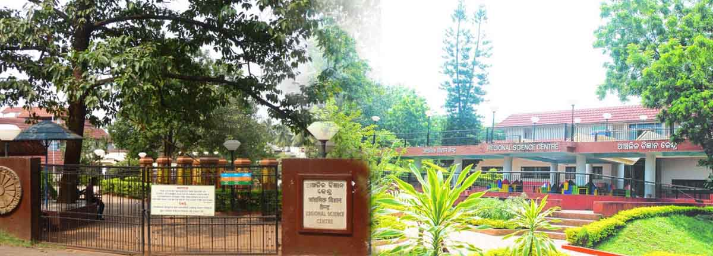

Regional Science Centre, established in the temple city of Bhubaneswar on 8 acres of land, was dedicated to the nation on 18th September, 1989. This Centre is one of the 26 science centres/science museums under the network of National Council of Science Museums, an autonomous council under the Ministry of Culture, Govt. of India. The Centre aims at inculcating scientific temper and popularizing science & technology amongst people of all walks of life, students in particular,in the state of Odisha through exhibits, exhibitions, special shows and educational programmes.
Sorry there is no 360 degree view yet.